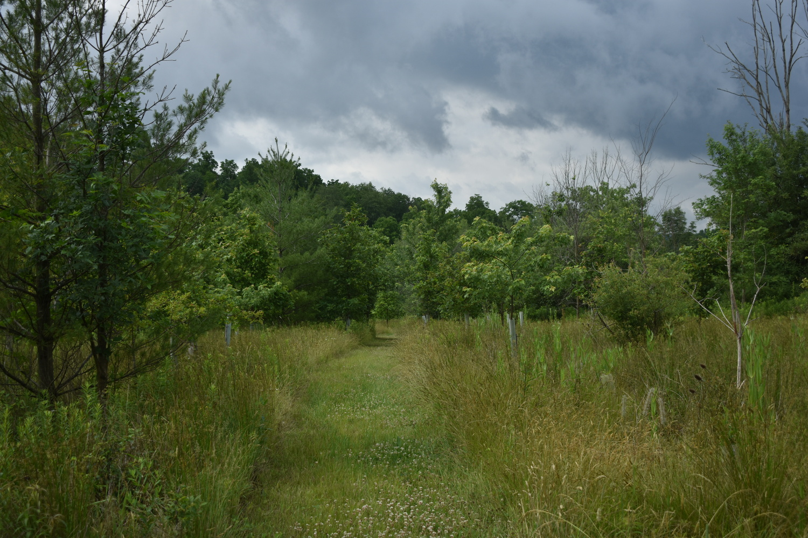

Concept
The Front Field is a former agricultural field that was repurposed in 2005 as a Palustrine forest. It sits between Brush Mountain Road and the Farm Pond, and between the farm lane and one of the northern borders of the property. It was always too wet for farm crops, but its mixed wet and dry areas accommodate both Palustrine and Terrestrial species. The transition was made possible by a volunteer tree planting effort organized by Nell Hanssen as a PVCA (Penns Valley Conservation Association) project with trees provided by the Chesapeake Bay Foundation. Over the years the area has required monitoring of invasives – especially Loosestrife, Teasels, and Multiflora – but those are now well-controlled. Current enhancement efforts will focus on planting an additional 100 or so trees to provide a stronger sense of wilderness enclosure. They include both Terrestrial and Palustrine species in the dryer and wetter areas, respectively. Notable species include Red and White Oak, Sugar and Red Maple in the upland areas and River Birch, Swamp White Oak, Sycamore, and White Pine in the wetter.
Steps
- Select a site
- The segment of the wetland noted above, selected (complete)
- Record it
- Plan
- Species whose numbers could be increased
- Species whose numbes could be decreased
- Species not currently pesent whose introduction could be beneficial
- Define plant palettes
- Planting Map
- Implement
- Sequence of actions
- Resources needed not currently available
- Timeline
- Assess
- Narrative
- Data
- Notes